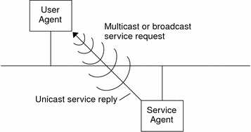
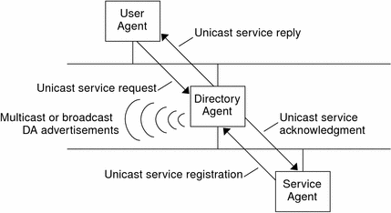
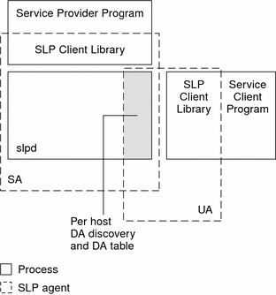

Previous
Previous
SLP (Overview)
The Service Location Protocol (SLP) provides a portable, platform-independent framework for the discovery and provisioning of SLP-enabled network services. This chapter describes the SLP architecture and the Solaris implementation of SLP for IP intranets.
SLP Architecture
This section outlines the fundamental operation of SLP and describes agents and processes that are used in SLP administration.
SLP provides all of the following services automatically, with little or no configuration.
Client application requests for information that is required to access a service
Advertisement of services on network hardware devices or software servers; for example, printers, file servers, video cameras, and HTTP servers
Managed recovery from primary server failures
In addition, you can do the following to administer and tune SLP operation if necessary.
Organize services and users into scopes that are composed of logical or functional groups
Enable SLP logging to monitor and troubleshoot the SLP operation on your network
Adjust SLP timing parameters to enhance performance and scalability
Configure SLP not to send and not to process multicast messages when SLP is deployed on networks that lack support for multicast routing
Deploy SLP Directory Agents to improve scalability and performance
Summary of the SLP Design
SLP libraries inform network-aware agents that advertise services in order for those services to be discovered over a network. SLP agents maintain up-to-date information on the type and location of services. These agents can also use proxy registrations to advertise services that are not directly SLP enabled. For more information, see Chapter 10, Incorporating Legacy Services.
Client applications rely on SLP libraries that make requests directly to the agents that advertise services.
SLP Agents and Processes
The following table describes the SLP agents. For expanded definitions of these terms and other terms that are used in this volume, refer to the Glossary.
Table 7-1 SLP AgentsSLP Agent | Description | |
|---|---|---|
Directory Agent (DA) | Process that caches SLP advertisements that are registered by Service Agents (SAs). The DA forwards service advertisements to User Agents (UAs) on demand. | |
Service Agent (SA) | SLP agent that acts on behalf of a service to distribute service advertisements and to register the service with Directory Agents (DAs). | |
User Agent (UA) | SLP agent that acts on behalf of a user or application to obtain service advertisement information. | |
scope | An administrative or logical grouping of services. |
The following figure shows the basic agents and processes that implement the SLP architecture. The figure represents a default deployment of SLP. No special configuration has been done. Only two agents are required: the UA and SA. The SLP framework allows the UA to multicast requests for services to the SA. The SA unicasts a reply to the UA. For example, when the UA sends a service request message, the SA responds with a service reply message. The service reply contains the location of services that match the client's requirements. Other requests and replies are possible for attributes and service types. For more information, see Chapter 11, SLP (Reference).
Figure 7-1 SLP Basic Agents and ProcessesThe following figure shows the basic agents and processes that implement the SLP architecture when a DA is deployed in the framework.
Figure 7-2 SLP Architectural Agents and Processes Implemented With a DAWhen you deploy DAs, fewer messages are sent in the network and UAs can retrieve information much faster. DAs are essential when the size of a network increases or for situations in which there is no support for multicast routing. The DA serves as a cache for registered service advertisements. SAs send register messages (SrvReg) that list all the services they advertise to DAs. SAs then receive acknowledgments (SrvAck) in reply. The service advertisements are refreshed with the DA, or they expire according to the lifetime that is set for the advertisement. After a UA discovers a DA, the UA unicasts a request to the DA rather than multicasting requests to SAs.
For more information about Solaris SLP messages, refer to Chapter 11, SLP (Reference).
SLP Implementation
In the Solaris SLP implementation, the SLP SAs, UAs, DAs, SA servers, scopes, and other architectural components in Table 7-1 are partially mapped into slpd and partially into application processes. The SLP daemon, slpd, organizes certain off-host SLP interactions to do the following:
Employ passive and active directory agent discovery in order to discover all DAs on the network
Maintain an updated table of DAs for the use of the UAs and SAs on the local host
Act as a proxy SA server for legacy service advertisements (proxy registration)
You can set the net.slpisDA property to also configure slpd to act as a DA. See Chapter 9, Administering SLP (Tasks).
For more information about the SLP daemon, see slpd(1M).
In addition to slpd, the C/C++ and Java client libraries (libslp.so and slp.jar) enable access to the SLP framework for UA and SA clients. The client libraries provide the following features:
Software that offers network services which can register and deregister service advertisements
Client software that can request services by issuing queries for service advertisements
The list of SLP scopes available for registration and requests
No special configuration is necessary to enable the inter-process communication between slpd and the client libraries that provide the previous services. You must, however, run the slpd process first before you load the client libraries in order for the libraries to function.
In the following figure, the SLP client library in the Service Provider Program employs SA functionality. The Service Provider Program uses the SLP client library to register and deregister services with slpd. The SLP client library in the Service Client Program employs UA functionality. The Service Client Program uses the SLP client library to make requests. The SLP client library either multicasts requests to SAs or unicasts them to DAs. This communication is transparent to the application except that the unicast method of issuing requests is faster. The behavior of the client library can be affected by setting various SLP configuration properties. For further information, see Chapter 9, Administering SLP (Tasks). The slpd process handles all SA functionality, such as answering multicast requests and registering with DAs.
Figure 7-3 SLP ImplementationOther SLP Information Sources
Refer to the following documents for further information on SLP:
Kempf, James, and Pete St. Pierre. Service Location Protocol for Enterprise Networks. John Wiley & Sons, Inc. ISBN Number: 0–471–31587–7.
Authentication Management Infrastructure Administration Guide. Part Number: 805–1139–03.
Guttman, Erik, Charles Perkins, John Veizades, and Michael Day. Service Location Protocol, Version 2, RFC 2608 from the Internet Engineering Task Force (IETF). [http://www.ietf.org/rfc/rfc2608.txt]
Kempf, James, and Erik Guttman. An API for Service Location, RFC 2614 from the Internet Engineering Task Force (IETF). [http://www.ietf.org/rfc/rfc2614.txt]